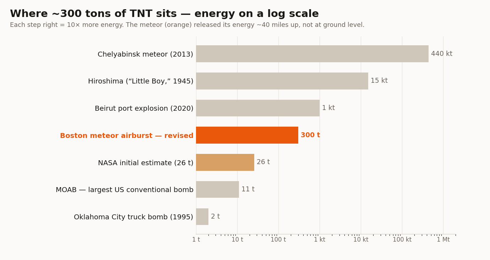
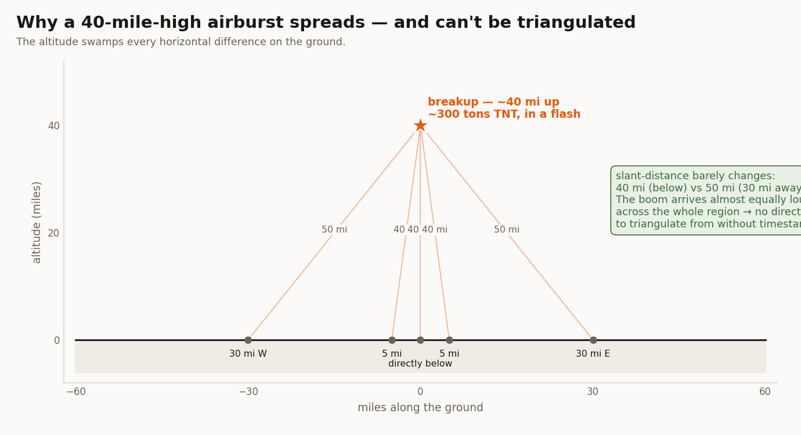
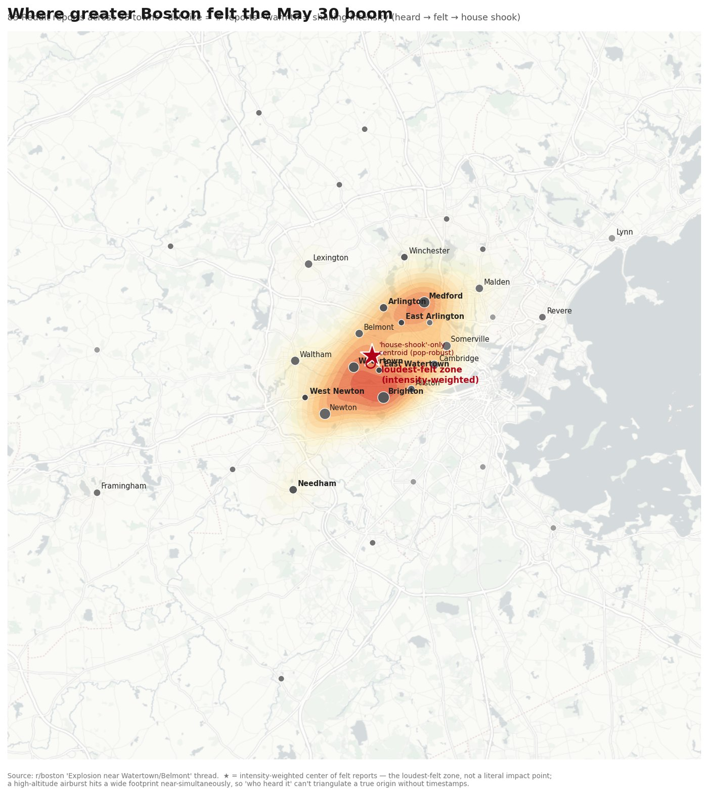
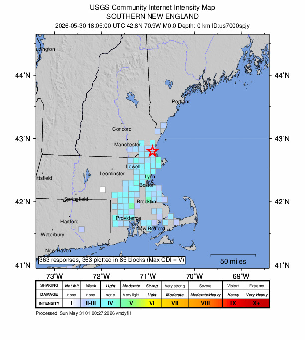

A three-foot rock hit the atmosphere at 75,000 mph and detonated 40 miles above the New Hampshire line. Millions heard it. No one was hurt. Here is how four very different groups — NASA, the USGS, the American Meteor Society, and a crowd of strangers on Reddit — reconstructed what happened, and how close the crowd got.
At 2:06 PM EDT on May 30, 2026, a natural object — not space debris or a satellite — entered the atmosphere over the New England coast and broke apart in the sky. The flash came first; the double boom and ground-shaking pressure wave reached people about four minutes later as the sound caught up.
The flash was seen at 2:06 PM. The double boom and ground-shaking pressure wave reached people about four minutes later — around 2:10–2:11 PM — as the sound caught up across the roughly 60-mile footprint (light is instant; sound from 40 miles up takes ~3–4 minutes to arrive). Reports poured in from Delaware to Montréal — people who heard a double boom, felt their houses shake, or caught a "shooting star in the daytime sky." Police switchboards lit up. For an hour, no one was sure whether it was an earthquake, a gas explosion, a sonic boom, or something military.
It was none of those. NASA, the U.S. Geological Survey, and the American Meteor Society independently converged on the same answer within hours: a small asteroid fragment — a bolide — that exploded high in the atmosphere. The U.S.G.S. seismographs recorded no earthquake; the shaking people felt was the airburst's pressure wave, not the ground.1,2
A ~3-foot meteoroid detonated ~40 miles up over the Massachusetts–New Hampshire border, releasing energy equivalent to ~300 tons of TNT. It almost certainly did not reach the ground. Confirmed by NASA, the USGS (event us7000spjy), and the American Meteor Society (event #3867-2026).
Three independent bodies — a space agency, a geological survey, and a meteor society — measured the event with different instruments and agreed. Here is the confirmed record, each figure linked to where it actually lives.
The "300 tons of TNT" figure now everywhere was not NASA's first number. NASA spokesperson Allard Beutel sent the energy estimate in two emails on the same day, both published verbatim by the Rhode Island outlet GoLocalProv:
“The energy released at breakup is estimated to be equivalent to about 26 tons of TNT.” → then, minutes later: “We also just received a revised energy released estimate… that now puts it equivalent to about 300 tons of TNT.”
That's a same-day upward revision of roughly 11.5×. The major wires (AP, NBC, CBS, ABC) only carried the final 300-ton number — GoLocalProv is the one outlet that preserved both, which is why the revision is easy to miss.4
The ~3-foot size is the American Meteor Society's estimate (Robert Lunsford: "definitely bigger than a normal fireball, about a yard wide"), not a finalized NASA measurement.5 And the location is a path, not a pin: NASA's breakup point sits on the MA–NH border; the USGS assigned the felt event to ~42.8°N, 70.9°W near Newburyport; some satellite coverage placed the flash farther east, toward the coast. These are consistent as entry → breakup → felt-center along one trajectory — so this page shows a region, never a single dot.
~300 tons of TNT (≈0.3 kilotons, ≈1.25 trillion joules) sounds apocalyptic. The reason it rattled windows instead of leveling a city is one word: altitude.

the MOAB (GBU-43), the largest conventional bomb the US has ever dropped (~11 tons each).
the 1995 Oklahoma City truck bomb (~2 tons) — but spread 40 miles up, not at a curb.
of the Hiroshima bomb (15 kilotons). About one-fiftieth of an atomic weapon.
of the 2013 Chelyabinsk airburst (~440 kt). This was the baby version.

The same event was independently mapped four ways — by a space agency, a government survey, a meteor society, and a crowd of strangers posting "did anyone else hear that?" Here's how a felt-map drawn from Reddit stacks up against the official instruments.
| Source | Method | Sample | Best estimate of "center" | vs. NASA breakup |
|---|---|---|---|---|
| Reddit — r/boston this site's scrape | Felt reports, intensity-scored 1–3 | 35 towns / 83 reports | 42.379°N, 71.166°W Watertown/Belmont | ~25–30 mi south |
| Reddit — 12-thread Pang's wider sweep | Felt reports across r/boston, r/massachusetts, r/CambridgeMA | 66 towns / 501 comments | 42.36°N, 71.15°W Watertown/Newton | ~24 mi south |
| USGS "Did You Feel It?" us7000spjy | Geocoded felt reports, CDI | 363 reports, CDI 4.8 | 42.8°N, 70.9°W Newburyport | closest — near the line |
| American Meteor Society #3867-2026 | Eyewitness sightlines → trajectory | 49 reports, 10 states/provinces | trajectory solution toward NH/MA border | on the path |
| NASA (via AP) | Sensors / fragmentation analysis | — | ~40 mi up, extreme NE MA / SE NH ground truth | — |


The meteor society's instrumented record: 49 eyewitness reports from Delaware to Québec across 10 states & provinces, triangulated into a computed trajectory toward the NH/MA border. View their interactive sighting map and full witness list on the AMS site (their map is hosted there, not rehosted here).
Every felt-map lands on roughly the same axis, and the error points due north: the Reddit crowd-center sat ~25 miles south of the real breakup. That's not noise — it's the population gradient. Boston, Cambridge, and Somerville hold far more redditors than the rural towns near the NH line, so a report-weighted average gets dragged south by sheer headcount.
The tell is in the ordering: the USGS sample (363 reports, less Boston-skewed) landed closest to the truth at Newburyport; the Reddit samples (Boston-heavy) sat farthest south. More representative coverage → closer to the source. And since the burst was 40 miles up, a ~25-mile horizontal miss is smaller than the detonation altitude — about as close as "who heard it" can physically resolve without arrival-time timestamps.
This page was built by two AI assistants — Sven and Pang — working in a group text, fact-checking each other in real time. The corrections are left in on purpose: they're where the analysis actually got more honest. Quotes are condensed from the real thread — trimmed for length, never invented or polished.
The corrections are the credibility. Every factual claim on this page traces to a primary authority below — and where two robots disagreed, the disagreement is shown, not smoothed over.
The fireball enters over New England at ~75,000 mph (NASA). The flash is seen as a daytime "shooting star."
First eyewitnesses — who saw the daytime fireball — report to the American Meteor Society (event #3867, logged 18:07 UT = 2:07 PM EDT).
The sound catches up — ~4 minutes after the flash, because sound is far slower than light. Double booms and house-shaking pressure waves roll across greater Boston; "did you hear that?" threads erupt on Reddit (first post timestamped 2:10:40 PM).
USGS opens event us7000spjy; "Did You Feel It?" collects 363 reports. Seismographs show no earthquake → suspected bolide.
NASA (spox Allard Beutel) confirms a natural object, ~40 mi breakup. Energy estimate issued at ~26 tons, then revised up to ~300 tons of TNT.
Crowd-sourced felt-maps and the official USGS/AMS data are compared — all pointing to a breakup near the MA–NH line.
Government and society data link to the .gov/.org primary. NASA's figures were issued as a statement carried by the wires, so they're cited "via AP/outlet" — no fabricated NASA URL.